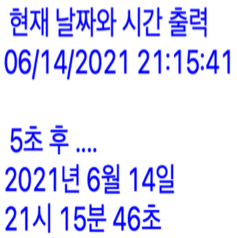
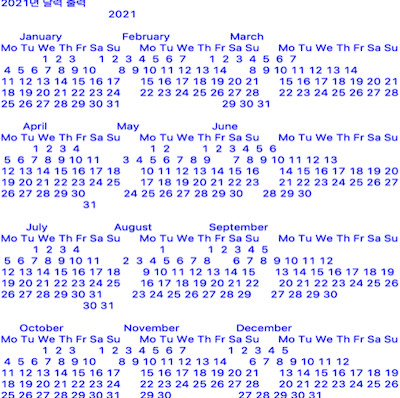
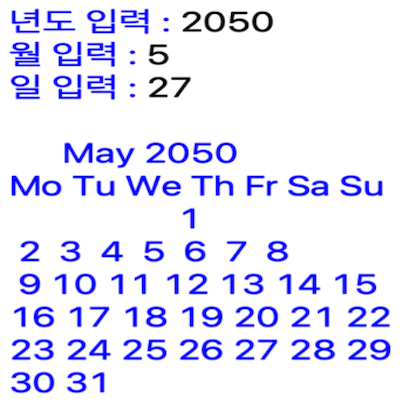

구현 기능
|  |
5초 후 시간 계산 기능 현재 날짜&시간과 5초 후의 날짜&시간을 계산해서 출력합니다. |
|  |
2021년도 달력 출력 기능 2021년도의 전체적인 달력을 출력합니다. |
|  |
날짜가 속한 달력 출력 기능 입력 받은 날짜가 속한 달력을 출력합니다. |
|
요일 계산 기능 입력 받은 날짜의 요일을 계산해서 출력합니다. |
배경과 목적
컴퓨팅사고 수업 시간에 날짜와 시간을 계산하는 프로그램을 구현하는 과제가 있었습니다.
컴퓨팅사고 수업 시간에 날짜와 시간을 계산하는 프로그램을 구현하는 과제가 있었습니다.
배운 점
- Python에서 calendar로 날짜를 계산하는 법을 알게 되었습니다.
- Python에서 time으로 시간을 계산하는 법을 알게 되었습니다.
- Python으로 시뮬레이터를 구현하는 법을 알게 되었습니다.
진행 절차
- calendar 모듈을 이용해서 2021년도 달력 전체를 출력하였습니다.
- 년, 월, 일을 입력받은 후, calendar 모듈을 이용해서 해당 날짜의 달력과 요일을 출력하였습니다.
- time 모듈을 이용해서, 현재 시간을 가져와서 출력하고 5초 대기 후에 다시 출력하였습니다.
- 이렇게 해서 원하는 프로그램을 구현할 수 있었습니다.
역량 강화를 위해 가장 노력한 점
calendar 모듈 및 time 모듈 활용
calendar 모듈 및 time 모듈 활용
전체 구조

사용 기술
Python
Python
개발 환경
Python IDLE 3.7
Python IDLE 3.7
부연 설명